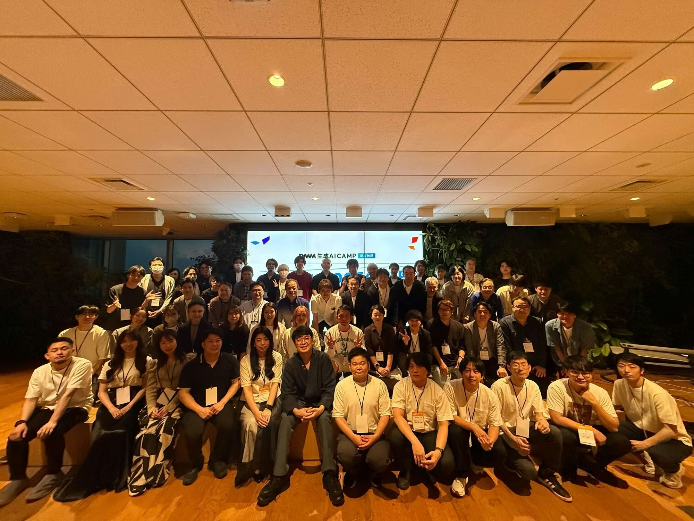

about
大学卒業後、三菱電機ITソリューションズにてコンサルティング営業に従事。5エリアの代理店を担当し、目標達成率 140〜150% を継続達成。
2022年9月に富士ソフトへ転職し、組み込み・業務系エンジニアとして自動車向けドライブレコーダー、電子タグ、セルフレジシステムなど多様なプロジェクトを経験。業務外でも Swift / SwiftUI を用いた iOS アプリを 3本 App Store にリリース しています。
副業では、DMM の 「ClaudeCodeマスターゼミ」「Difyマスターゼミ」「ClaudeCode入門ゼミ」「AIアプリ開発入門ゼミ」 の講師・登壇者として、第1期から第6期まで のべ10クラス を担当（第1期マスターゼミ2講座の応募合計 370 名以上）。Claude Code・Dify をテーマにしたワークショップにも 13本 登壇しています。2026年10月までは、デジハクで生成AI PRO コースの専属メンターと法人向けAI研修のカリキュラム設計も担当しました。OSS としては Claude Code 向けプラグインを 4本 個人開発し GitHub で公開中。
「教える」だけで終わらせず、受講生の理解度を測る学習管理Webアプリを自作して Turso・Vercel で本番運用するなど、教育の仕組みごと設計・運用しているのが特徴です。
ビジネスサイドと開発現場の両方の視点を持ち、「なぜ作るのか」を常に意識した開発が強みです。
skills
career
2025.01 → 現在
30名体制のプロジェクトにて不具合調査・修正、収納代行機能の新規開発を担当。
2024.06 → 2024.12
要件定義・制御仕様書作成から実装・テスト・納品まで一貫して主担当。NFC・E-paper・ZigBee を統合。顧客より高評価を得て追加発注を獲得。
2024.01 → 2024.05
不具合調査・改修、エラーディスパッチャの新規実装を担当。Go / Echo を未経験から習得して実務レベルへ。
2022.12 → 2023.12
30名体制のプロジェクトにてテスト項目書の作成・実行・進捗管理補助。並行して社内業務自動化ツール（Python スクレイピング + Excel VBA）を開発。
2021.04 → 2022.08
新潟・長野・大阪・広島・福岡の5エリアを担当。業務改善提案・定例ミーティング・イベント企画を通じて担当代理店の売上目標を継続達成。
2026.05 → 現在
「ClaudeCodeマスターゼミ」「Difyマスターゼミ」「ClaudeCode入門ゼミ」「AIアプリ開発入門ゼミ」の講師・登壇者として、3ヶ月・全13回（AIアプリ開発入門ゼミは隔週・全7回）のゼミを第1期から第6期まで のべ10クラス 担当（最大6クラスを並行運営）。週次LIVE講義・事前課題の公開添削・卒業制作の指導まで担当し、AIアプリ開発入門ゼミはカリキュラムの設計から手がけた。第1期の ClaudeCodeマスターゼミは 270名以上、Difyマスターゼミは 100名以上 の応募を獲得。
2026.06 → 現在
授業中の理解度チェックアプリ「リカイド」（2026.09 まで運用。全108レッスンを2度監査）と、ゼミ横断の演習・宿題・模擬試験サイト「Boarding Pass」を設計・実装し本番運用。外部依存ゼロのPOCで仕様を検証してから Turso＋Vercel へ移行。Boarding Pass には3ゼミと生成AIパスポート試験対策の演習 900問超 と講義資料を載せ、受講生向けガイドも継続して追加している。
2026.06 → 2026.07
書籍の販促POP画像とLPを自動生成するシステムを設計・実装。背景ビジュアルは画像生成AI、日本語テキストは Pillow で合成する分担にして文字崩れを構造的に回避。統合UI（Flask）とプレゼン用デモまで制作。
2026.03 → 現在
DMMの方針変更によりメンター業務から Workshop 担当へ移行。Claude Code・Dify をテーマにした先着100〜200名規模のハンズオンを継続開催し、2026年5月から9月までに 13本 登壇。題材は再利用できる Claude Code プラグインとして実装し OSS 公開している。
2026.06 → 2026.10
UNIT BASE株式会社「デジハク」の法人向けAI研修において、全10回カリキュラムの構成設計と、中核となる STEP2（全6回）の設計を担当。模擬案件「自社情報を回答するチャットボット」を Dify のチャットフローで作り切る構成に設計し、GAS自動化教材3本も制作。
2026.04 → 2026.10
UNIT BASE株式会社が運営するAIスクール「デジハク」生成AI PROコースの専属メンターとして、AIを活用したキャリア形成・収入向上をテーマにしたマンツーマンメンタリングを担当。Claude Code のスキルズ／プラグインをテーマにした講義にも登壇。本コースの教材作成・カリキュラム設計は範囲外。
2026.06
Python 基礎研修のうち、初学者が最もつまずくオブジェクト指向の章を担当。到達目標を「まずコードが読める」に置き直して構成を再設計し、教材サイトと確認テスト・成果測定テストまで制作。
2025.07 → 2026.03
AI開発ツール「Dify」受講生向けの非同期チャットサポート（Slack）を担当し、学習支援・疑問対応を実施。
projects
iOS ペット管理アプリ
MVVM 設計で Firebase Authentication / Cloud Firestore を活用。ペットの健康記録・スケジュール管理機能を実装し App Store にリリース。
iOS AI ゲームアプリ
ChatGPT API を活用した AI 会話ゲーム。ユーザーが謎に質問し、AI が Yes / No で答えながら真相を導くインタラクティブな体験を提供。
iOS スキャン・セキュリティアプリ
スキャン機能とセキュリティ機能を組み合わせた iOS アプリを設計・開発し App Store にリリース。
組み込みシステム（主担当）
要件定義から制御仕様書作成・実装・テスト・納品まで一貫して主担当。NFC・E-paper・ZigBee 等の複数モジュールを統合し、顧客から高評価。追加発注を獲得。
バックエンド開発
Go / Echo を未経験から短期習得し、不具合調査・改修とエラーディスパッチャの新規実装を担当。5名体制で5ヶ月間バックエンド開発に従事。
DMM 副業 / 2026.05〜
ClaudeCodeマスターゼミ（第1期 270名以上応募）、Difyマスターゼミ（第1期 100名以上応募）、ClaudeCode入門ゼミ、AIアプリ開発入門ゼミの講師・登壇者。第1期〜第6期でのべ10クラスを担当し、最大6クラスを並行運営。週次LIVE講義から卒業制作の指導まで担当。
UNIT BASE 副業 / 2026.04〜2026.10
生成AI PRO コース受講生へのマンツーマン面談を通じ、AI を活用したキャリア形成・収入向上に関する伴走支援を担当。Claude Code のスキルズ／プラグインをテーマにした講義にも登壇。本コースの教材作成・カリキュラム設計は範囲外。
DMM 副業 / 2026.06〜
「受講生がどこで詰まっているか見えない」という講師業務の課題から内製。授業中の理解度チェックと、授業外の演習・宿題・模擬試験＋成績集計を別プロダクトとして設計。外部依存ゼロの POC で仕様を検証してから Turso＋Vercel の本番構成へ移行。理解度チェックは 2026.09 で役目を終え、現在は Boarding Pass が3ゼミ・複数期と生成AIパスポート試験対策で稼働中。問題集は合計900問超を作成。
DMM 副業 / 2026.06〜2026.07
書籍の販促POP画像とLPを一括自動生成するシステム。背景ビジュアルは画像生成APIに任せ、日本語テキストは Pillow で合成する分担にして文字崩れを構造的に回避した。APIキー未設定でも動くフォールバックや、ネット接続不要のプレゼンデモなど「本番で止まらない」設計を優先。
UNIT BASE 副業 / 2026.06〜2026.10
デジハク法人向けAI研修（全10回）の構成設計と、中核となる STEP2（全6回）の設計を担当。模擬案件「自社情報を回答するチャットボット」を Dify のチャットフローで作り切る集合型ワークショップとして設計し、RAG を「素材づくり」と「結線して価値が出る」の2段階に分割した。
oss
個人開発・GitHub 公開中のオープンソースプロジェクト。
Claude Code 向けプラグイン ── 5部署サブエージェント体制で個人開発を運用するワークフロー
個人開発を「設計／開発／レビュー／テスト＋セキュリティ」の 5 つのサブエージェント部署体制で運用するワークフローを提供する Claude Code プラグイン。MIT License with Attribution Requirement で公開。企画・要件定義・設計・実装・ドキュメント整備・ライセンス設計・リリース運用まで一貫して担当。
docs/.cc-dev-state.json による compaction 対策DMM の AI Workshop で扱う題材を、その場限りの手順書ではなく「後から拡張できる資産」として公開
Workshop の題材を再利用できる Claude Code プラグインとして設計・実装し、GitHub で公開。参加者が Workshop 後も自分の業務に合わせて拡張できる形にすることを狙いとした。いずれも日本語ドキュメント・参加者向けの導入手順を同梱し、公開後もバージョンアップを継続している。企画・設計・実装・ドキュメント整備・リリース運用まで一貫して担当。
activities

第1回 DMM オフラインイベント 集合写真単発・ボランティア / 会場：DMM 六本木オフィス
DMM 主催の初オフラインリアルイベント「AI 1DAY Boot Camp」に運営スタッフとして参加。Workshop・マスターゼミ等の日々の活動を評価いただき、DMM 側からのお声がけを受けて参画。バイブコーディング Workshop および AIデザイン Workshop における受講生のフォローアップ補助、会場設営・来場者誘導・オペレーション裏方支援を担当。
contact
業務委託のご相談はお気軽にどうぞ。